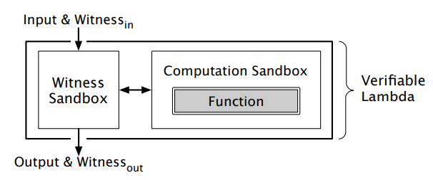
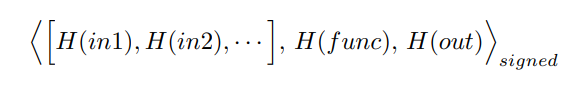
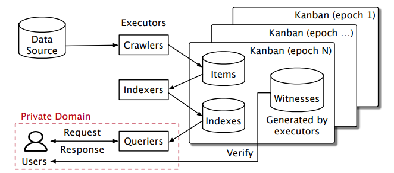
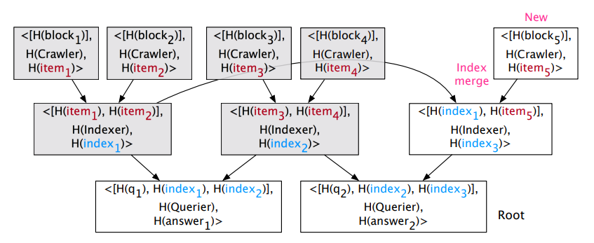

Bringing Decentralized Search to Decentralized Services
(Code name: ${\rm D {\small E}S {\small EARCH}}$)
Problem definition: search engine
- ...but not Google
- Assumption: dataset being searched is single-sourced, publicly accessible and auditable,
e.g. (i.e. in this paper), it is hosted on blockchain, and the hash of whole
dataset is available
- A search engine more like (and be compared to) ElasticSearch, which is also useful in many
cases
- Decentralized Twitter (Steemit)
- Decentralized Amazon (OpenBazaar)
- Crawl dataset, generate indices, react to query
Problem definition: decentralized(pronounced as
FREEDOM)
✔ Decentralized (in 2022 a.k.a. blockchain) is the future
✘ Decentralized world does not have a searching tool
Propose a searching service that:
- Run by cooperative, weak,
unreliable, possibly short-lived
executors with
limited resources
- Not covered: incentive, (real) fault tolerance
- Basically workload-dividing is well discussed, but no detail about
distribution/scheduling
- Search result is verifiable by everyone
Background: searching from scratch
Artificial intelligence
Artificial intelligence (AI) is intelligence
demonstrated by
machines,
as opposed to the natural intelligence displayed by animals including humans. ...
Machine learning
Machine learning
(ML) is a field of inquiry devoted to
understanding
and building methods that 'learn', that is, methods that leverage data to improve
performance on
some set of tasks.[1] ...
Computer vision
Computer vision is an interdisciplinary scientific field that
deals
with how computers can gain high-level understanding from digital images or videos.
From
the
perspective of engineering, it seeks to understand and automate tasks that the human
visual
system can do.[1][2] ...
Inverted index
"intelligence" => AI, ...
"machine" => AI, ML, ...
"understand" => ML, CV, ...
"visual" => CV, ...
"learn" => ... (every article contains "learn")
(every word in AI | ML | CV | DL | ...) => ...
Background: searching from scratch
Inverted index
"intelligence" => AI, ...
"machine" => AI, ML, ...
"understand" => ML, CV, ...
"visual" => CV, ...
"learn" => ... (every article contains "learn")
(every word in AI | ML | CV | DL | ...) => ...
Q: intelligence
A: AI, ...
Q: machine | visual
A: AI, ML, CV, ...
Verifiable searching
- How to verify a remotely-executed whitebox:
result = Search(dataset, query)
- Result is trustable as long as:
- Dataset is trustable, which is already assumed
- Execution is trustable: how to prove correct
Search program is executed
- Replication approach: trust majority of identify/power of executing correctly
- Not used because it is not scalable
- Instead delegate whole responsibility to the new technology: trusted execution environment
Background: trusted execution environment
- Endorsement key: RSA key pair created randomly on the chip at manufacture time
- Private key never leaves the chip, cannot be changed
- Signing execution result with the key is a proof of execution happened on the chip
- Remote attestion: everyone who has the public key (with according CA) can verify the
signature
- Trusted platform module: fixed-function chip
- Trusted execution environment: programmmable chip with memory + trusted OS running on it
- What if chip's data/program is tampered?
- Hardware isolation prevents any modification from outside
- Trusted application is signed and trusted OS verify it before loading into TEE
- Trusted OS is loaded by ROM
- Signed execution result is trusted to be correct if you trust:
- No one (including manufactor) knows the private key
- The chip is manufactured correctly so
- Initialize TEE correctly with trusted OS image
- Only code already running in TEE can modify its
memory
- Trusted OS only load verified correct version of application
Background: trusted execution environment
- Endorsement key: RSA key pair created randomly on the chip at manufacture time
- Private key never leaves the chip, cannot be changed
- Signing execution result with the key is a proof of execution happened on the chip
- Remote attestion: everyone who has the public key (with according CA) can verify the
signature
- Trusted platform module: fixed-function chip
- Trusted execution environment: programmmable chip with memory + trusted OS running on it
- What if chip's data/program is tampered?
- Hardware isolation prevents any modification from outside
- Trusted application is signed and trusted OS verify it before loading into TEE
- Trusted OS is loaded by ROM
- Signed execution result is trusted to be correct if you trust:
- No one (including manufactor) knows the private key
- The chip is manufactured correctly so
- Initialize TEE correctly with trusted OS image
- Only code already running in TEE can modify its
memory
- Trusted OS only load verified correct version of application
TEE in practice
-
What if another trusted application is executed?
- What if input is tampered even before reaching TEE?

- Another layer of isolation and trace IO
- Decouple signing and execution
- Cover everything by signature, called
witness

How to build a decentralized seraching system
- Nodes have limited resources: divide task into 3 stages with sharding (discuss shortly)
- Nodes may be short-lived: stateless tasks & a (centralized) untrusted storage
- Nodes may be evil: verify result is calculated by verified program with verified input
- Client may delegate verification to executors (and trust them)
- Some other engineering to ensure user privacy, omitted in this talk
Engineering:
N * search = 1 * (crawl + index) + N * query


Enginnering: Masters and Kanban
- Masters: A group of executors, the decentralized central role
- Assign workload to all executors
- Decide when next epoch starts (about 15 minutes)
- Crawler and indexer work once per epoch, querier work per request
- In evaluation seems like they crawl and index for 10 days, then query against it
- Executor read epoch N - 1 data and write epoch N data
- If a shard is not updated in epoch N - 1 (e.g. because executor failure), read the most
recent version
- Kanban: key value store of all crawled and indexed data (234GB) and witness (37.68 + 6.25GB)
- Snapshot every epoch, consensus on masters
- Verify witness and Kanban's data according to masters' agreement
Evaluation with 9 desktop
- 133.8 requests/sec @ 21.71ms
- Verifiable cost: 15.2% + 7.6% throughput decrease, 0.4% + 8ms latency
- User privacy cost: 12.6x throughput decrease, 4.5-11.9x latency increase
- Search four keywords @ 46.3ms
- Untrusted version is 4.8x slower than ElasticSearch
- Verify witness takes 15698s (and another 517s to download data), or 1.2s if delegated
Evaluation with 16 replicas of 82 shards
- 1484 requests/sec
- When 7.7% queriers fail, throughput drop 35.4%
- When 33.7% queriers fail, throughput drop 64.8%